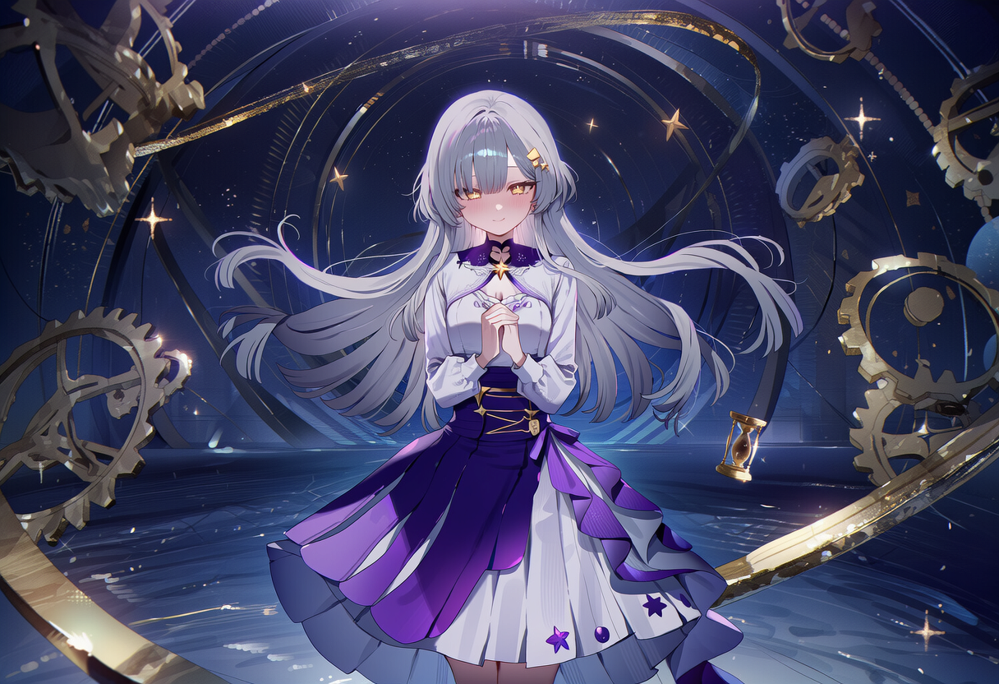

The Realm of Time
영겁의 회랑
시간의 신이 머무는 곳
끝없이 이어지는 대리석 회랑. 공중에는 거대한 시계와 톱니바퀴가 소리 없이 떠서 돌아가고, 벽을 따라 수많은 문과 창문이 늘어서 있다. 공기 중에는 금빛 모래가 가만히 떠다니며, 적막하지만 장엄한 기운이 회랑 전체를 가득 채운다.
Gallery
[영겁의 회랑 이미지 삽입 위치]

끝없이 이어지는 대리석 회랑. 공중에는 거대한 시계와 톱니바퀴가 소리 없이 떠서 돌아가고, 벽을 따라 수많은 문과 창문이 늘어서 있다. 공기 중에는 금빛 모래가 가만히 떠다니며, 적막하지만 장엄한 기운이 회랑 전체를 가득 채운다.
